ENZYME
BATH
ココロとカラダのデトックス♪
美容と健康に効果絶大！運動量はマラソン２時間分に匹敵します。
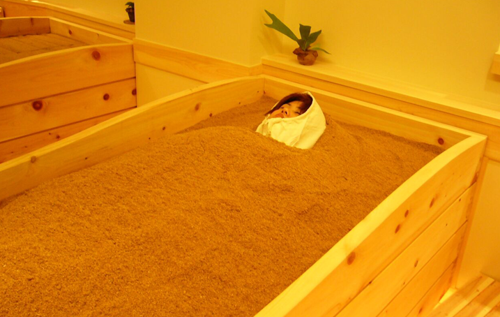
美容と健康意識の高まりとともに一躍脚光を浴びているのが酵素風呂です。ゆっくり保温しながら休むことで、からだの内側からキレイと健康が引き出される究極の『温熱療法』。
体を芯から暖めてリラックスできる酵素風呂はあらゆる人に自信をもってお勧めできる素晴らしい美容・健康法であると考えます。
ＳＡＬＯＮＳＨＯＴＳＰＡ Ｌａｎｉでは、380種類以上の天然素材から抽出した酵素原液を使用しています。
自然発酵の熱により体が芯か暖まり。血行を促進し発汗作用も促進するため自然治癒欲も高まり美容や健康維持に最適です。
疲労を回復させ、筋肉のコリをほぐしてくれるので、肩こりや神経痛、筋肉痛の痛みも緩和することにより体が軽くなります。
発汗作用により血液中の老廃物・毒素を体外に排出させると同時に、酵素の力で新陳代謝が活発になるので自然と細胞が活性化していくのです。
- 酵素風呂をおすすめしたい方
-
※下記のような症状でお困りの方
便秘・内臓疾患・血行不良・肩こり・腰痛・筋肉痛・五十肩・ムチウチ・関節痛・頭痛・神経痛・リウマチ・リハビリ中・冷え性・低血圧・高血圧・生理痛・生理不順・貧血症・骨粗鬆症・各種成人病・虚弱体質等・肌荒れ・しみ・くすみ・吹出物・にきび・日焼け・アレルギー・アトピー・湿疹・喘息・花粉症・肥満・不眠症・自律神経失調症・イライラ・疲れ・ストレス等
効果絶大の酵素風呂のヒミツ
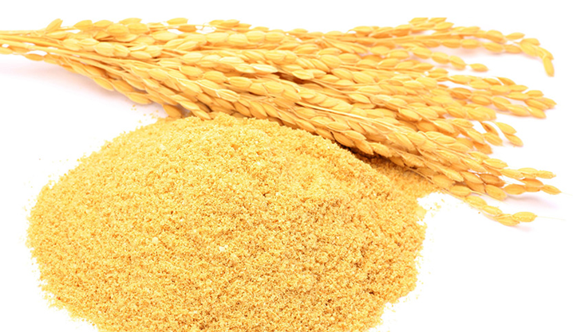
酵素風呂には森林浴効果もあります。
心が癒されると体を癒す効果が大きくなります。森林と同様に酵素浴室には醗酵時に発生するマイナスイオンやフィトンチッドなど心をリラックスさせ気分を落ち着かせる物質が満ち溢れています。
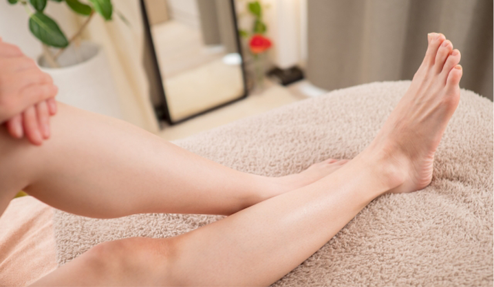
酵素風呂に入ってまず感じることは全身の肌がつるつるすべすべになることです。ニキビや吹き出物に悩んでいる方も効果的で、1回の体験でもつるつるのお肌を実感して頂けますが、通っていただくにつれてしっとりした状態が継続するようになるので基礎化粧品がいらなくなる方もいます。
このつるつる感をぜひご体験ください。
酵素風呂のとりこになってしまいますよ♪
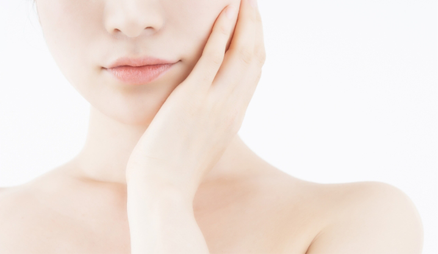
酵素風呂は続けていると肌がつるつるになるだけでなく白くなってきます。それからしみやくすみが少なくなってきます。発酵したものには漂白効果があるのです。
例えばぬかみそを混ぜる手が白くなってすべすべになる話を聞いたことがあると思います。
酵素風呂は全身をつるつるすべすべにしてかつ肌の色を白くしてくれます。
酵素風呂に入ると肌表面の血行が良くなり、新陳代謝が活性化されて不要な老廃物をきれいに排出できるようになるために肌も白くなってきます。特に女性は首から胸にかけてのデコルテの部分が透き通った感じの白さになって美しくなります。
かかとの角質も柔らかくなって白くなる効果が期待できます。
約60分の酵素風呂で心も体もデトックス！
- 1. 例：お着換え・カウンセリング（約10分）
- 受付後、お着替えをしていただいたら、カウンセリングを受けていただきます。お客様それぞれのお悩み・ご要望をお伺いし、お一人おひとりに合った施術を導きだします。
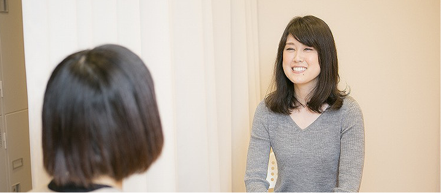
- 2 例：入酵（10分～20分 ※体調状況により）
- ビタミン・ミネラル等を多く含む、純国産 100％のふわふわの米ぬかで全身をやさしく包みこみます。担当スタッフがカウンセリングで伺ったところに、適温の米ぬかをかけていきます。リラックスしながら汗がかけます。
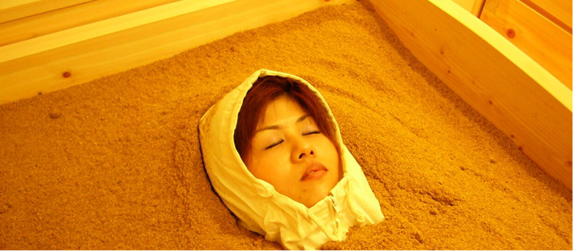
- 3. 例：特に重要なデトックスタイム（約40分）
- シャワーで米ぬかを流した後、水分補給をしながら、ゆっくりお休みいただきます。汗をかきながら少しずつ体温を下げることで、米ぬか酵素SPAの効果を何倍にも高める大切な時間です。
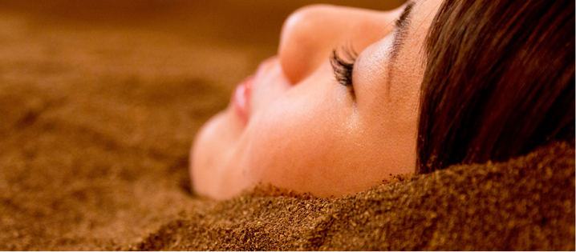
YOMOGI
よもぎの温もりで、
内側から整える癒しの温活時間
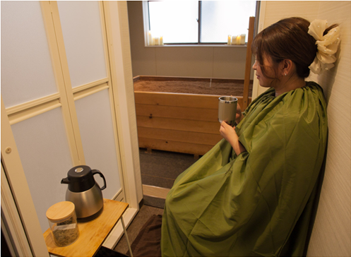
よもぎ蒸しは、よもぎをはじめとした植物の蒸気を身体全体に浴びることで、内側からじんわり温めていく人気の温活ケアです。
冷えや女性特有のお悩み、疲れやストレスを感じている方にもおすすめで、身体を温めながらリラックスした時間をお過ごしいただけます。
SALON'S HOT SPA
Laniでは、心までほっと落ち着ける空間づくりを大切にし、一人ひとりのお悩みや体調に寄り添った施術をご提供しております。
酵素風呂との組み合わせにより、より身体の巡りを感じやすく、代謝ケアや美容サポートとしても人気です。
毎日を頑張るご自身へのご褒美として、身体の内側から整う心地よさをぜひご体感ください。
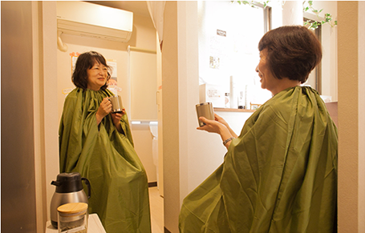
- 冷えや女性特有のお悩みに
-
よもぎ蒸しは、身体を内側からじんわり温めることで、冷えや女性特有のお悩みを抱える方にも人気の温活ケアです。
下半身からしっかり温まることで巡りをサポートし、身体を芯から整えていきます。エアコンによる冷えや季節の変わり目の不調、日々の疲れが気になる方にもおすすめです。
温かな蒸気に包まれながら、心身ともにリラックスできる癒しの時間をお過ごしいただけます。
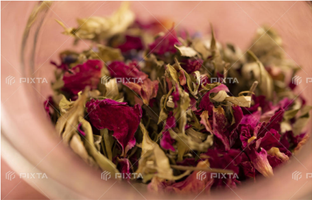
- こだわりのよもぎ蒸しで心と身体を整える
-
当サロンのよもぎ蒸しは、酵素室のシャワールーム前の脱衣スペースで行うため、酵素室内に広がるマイナスイオンやフィトンチッドを感じながらお過ごしいただけます。プラス料金で個室のご利用も可能で、ペアでのご利用にも対応しています。
使用するよもぎは、岐阜県の山あいで採れたものを厳選。
美容を意識される方にはハーブよもぎ、健康維持を重視される方には漢方よもぎをご提案しています。また、代謝アップをサポートする生姜や、すっきりとした香りの薄荷をオプションで追加することも可能です。お客様の目的に合わせたよもぎ蒸しをお楽しみいただけます。
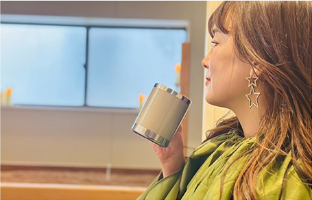
- 心までほぐれるリラックスタイム
-
よもぎのやさしい香りと温かな蒸気に包まれることで、日々の忙しさを忘れられるようなリラックスタイムをお楽しみいただけます。
スマートフォンや仕事、人間関係などで知らず知らずのうちに溜まったストレスを癒し、心までゆったりと整えてくれるのもよもぎ蒸しの魅力です。
自分自身と向き合う時間として、頑張る毎日のご褒美にもおすすめしています。
VOICE
- オーナーの実体験
-
約2年前に酵素風呂に出会い、その効果、効能に驚き虜になりました。
酵素風呂に出会ってから1週間に1回通うようになりました。ホットヨガや岩盤浴を超える汗の出方とデトックス感にやみつきです。
酵素風呂入った日は、お仕事すると、お客様のお爪を整えるファイルをする作業だけでも大量の汗が。。体が芯から温まるので、2、3日は汗が出やすい環境になります。
肌荒れに悩んだ時期も、行くと次の日には少し良くなってるのがすごく実感でき、ツルツルの肌になっていきます。
健康にも美容にもこんなに最適なものはないととおもいます。
ぜひ当サロンで体験してみてください。
- スタッフの実体験
-
実は…かなりのひどい頑固な便秘に悩んでいましたが、酵素風呂の管理をして管理資材に触れることが多く、入酵することも増えてから毎日嘘のように悩みが改善されました。
その後、少し酵素風呂から数日離れたところ
また便秘に悩まされました… 笑
そして…ひどかった手の主婦湿疹も綺麗になってきています！！
本当にこれからどんな効果が自分に訪れるのかすごく楽しみです。
BOTTLE
ALONS HOT SPA
Laniでは酵素風呂の際の水分補給として、水素水を無料でご提供します。併せてマイボトル水素水用ボトルを販売しております。
ご希望の方はスタッフまでお申し付けください。
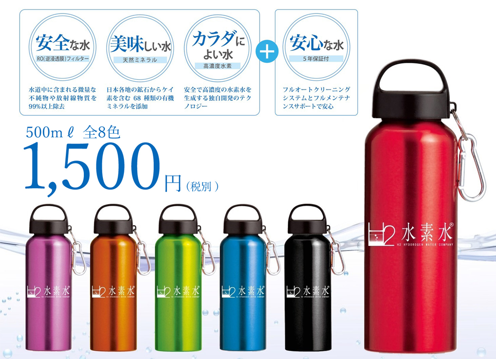
- 酵素風呂の入酵風景を動画でチェック